|
2001: A Joke Odyssey
Animal Stories for Under Fives
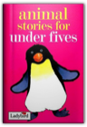
Joan Stimson
ECB-05
Animals at Work: How Animals Build, Dig, Fish and Trap
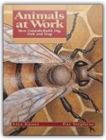
Etta Kaner
Did you know that termites build towers as tall as houses? Or that ogre-faced spiders throw net traps over their prey? Whether it's to gather food, build shelter or attract a mate, animals work in unexpected ways. Kids can try activities that demonstrate some surprising animal skills, like blowing bubbles the way a spittlebug does to hide itself from predators. Or mastering the half hitch and running knots that the weaverbird ties (with its feet!) when it builds a nest. Using concise language and realistic illustrations, this title in the Animal Behavior series takes a resourceful approach to exploring animal life.
Baby's World Shaped Board: Good Night
Birds Sticker Book

BRIGHT AND BEAUTIFUL (H) 91 PRINTING

Cinderella
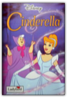
Disney
Custom Motorcycles

Disney's Kim Possible: Extreme - Book #10: Chapter Book

Dragon, Readers Library Take Home Level 3 Set of 5: Houghton Mifflin the Nation's Choice
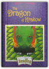
A Polish folktale. A hungry dragon comes to town. Can the people save their village?
Enormous Turnip
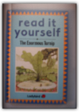
Fran Hunia
A rewritten title from the previous "Read it Yourself" series with the original concept of the child reading a familiar story and the link with Key Words retained. It is part of Ladybird's overall "Learning to Read" programme which can be used alongside any other reading scheme.
Funfax Spy File: Deadly Dangerous Adventure Pb

The Gargoyle
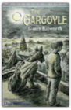
Going to the Playground
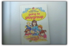
Mary Haselden
ECB-13
Hansel and Gretel
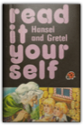
Fran Hunia, Anne Dzierzek
A rewritten title from the previous "Read it Yourself" series with the original concept of the child reading a familiar story and the link with Key Words retained. It is part of Ladybird's overall "Learning to Read" programme which can be used alongside any other reading scheme.
The Hidden Staircase
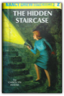
Carolyn Keene
Teenage detective Nancy Drew uses her courage and powers of deduction to solve the mysterious happenings in an old stone mansion.
The Hot Cross Bunny Joke Book
Hunted Along the Rhine
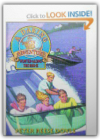
Peter Reese Doyle
ECB-36
I Can Tell the Time

I Can Tell the Time

Joseph the Dreamer

Joseph's coat

King Solomon
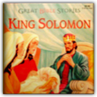
King Solomon ruled with justice and fairness, and the people of Israel trusted him and relied on his judments..
Lost in the Secret Cave
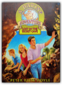
Peter Reese Doyle
While touring the coast of Portugal with their friend David, Penny and Mark Daring discover a gold-smuggling ring inside an ocean cave and find themselves in great danger as they try to evade their pursuers through unfamiliar tunnels.
The Magic Paintbrush
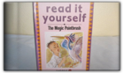
Fran Hunia
Magnets
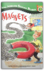
Anne Schreiber
What's strong enough to smash atoms? What's able to power high speed trains? What can defy the force of gravity? It's in metals. It's in Earth. It's magnetism! Filled with interesting facts and easy at-home magnet experiments.
Mighty One the Wizard
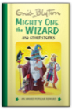
Enid Blyton
Most Important Story Ever Told

My Home
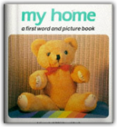
Rod Campbell, Peter Loughran
A new title in the BIG BOARD BOOKS series, illustrated throughout with full colour photographs.
Nursery Collection
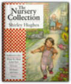
Shirley Hughes
This is a rhyming nursery picture book featuring a lively toddler and her baby brother. This material was originally published in a series of six small titles, five of which are included in this book - "Colours", "All Shapes and Sizes", "Noisy", "Bathwater's Hot" and "When We Went to the Park". Shirley Hughes has won the Kate Greenaway Medal for "Dogger" and the Eleanor Farjeon Award for her services to children's literature. Her other books include "Out and About", "Angel Mae", "The Big Concrete Lorry", "The Snow Lady", "Wheels", "Giving", "Bouncing", "Chatting" and "Hiding".
Old MacDonald
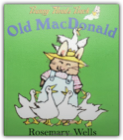
Rosemary Wells
A beloved nursery rhyme classic to put your child on the road to reading!Rosemary Wells, one of America's foremost creators of children's books, will have the very youngest child turning pages and remembering the words. What better way instill a lifetime love of reading and learning? Old Macdonald's Farm

Oxford Reading Tree: Stage 4: Storybooks: House for Sale
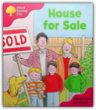
Roderick Hunt
"Oxford Reading Tree" remains the nation's favorite reading scheme and countless children have learnt to read with Biff, Chip, and Kipper. We are delighted to unveil its fresh new look for today's children, teachers and parents, with lively new covers and fresh artwork. Engaging new artwork and covers - Alex Brychta's unique style of artwork enthralls and entertains children, and the fresh new look will heighten their pleasure in reading the stories. With freshly drawn artwork for all the favorite core stories at Stages 2 - 5 and fantastic new covers, "Oxford Reading Tree" is more appealing than ever! Stories children love - The "Oxford Reading Tree" stories have always captivated children's imagination, inspiring them to read - and the stories and characters in the new editions haven't changed at all. Apart, that is, from an exciting new story at Stage 3, "The Egg Hunt", which replaces the "Dolphin Pool". Simplified structure - We have also simplified the structure of the scheme in response to feedback from you: "Owls" Storybooks become Stages 6 and 7 Storybooks; "Magpies" become Stages 8 and 9 Storybooks; "Wrens" at Stages 2 have become patterned stories at Stages 1+ and Stage 2; and "Wrens" at Stage 3 are now patterned stories at Stage 2. New teaching support material - In addition to the existing guided reading cards, perfect for use in guided reading sessions, we have brought out new teaching materials to reflect the needs of teachers in today's classroom: flexible, friendly teacher's notes included free with each pack of "Oxford Reading Tree" books - these are easy to store and will save you hours of preparation!; new Take-Home cards for every Storybook from Stages 1 - 9 to help parents or carers get the most out of reading with their child; free resources website with downloadable photocopy masters; and new "Teacher's Handbook" and special edition for Scotland.
Oxford Reading Tree: Stage 4: Storybooks: the Play
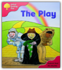
Roderick Hunt
"Oxford Reading Tree" remains the nation's favorite reading scheme and countless children have learnt to read with Biff, Chip, and Kipper. We are delighted to unveil its fresh new look for today's children, teachers and parents, with lively new covers and fresh artwork. Engaging new artwork and covers - Alex Brychta's unique style of artwork enthralls and entertains children, and the fresh new look will heighten their pleasure in reading the stories. With freshly drawn artwork for all the favorite core stories at Stages 2 - 5 and fantastic new covers, "Oxford Reading Tree" is more appealing than ever! Stories children love - The "Oxford Reading Tree" stories have always captivated children's imagination, inspiring them to read - and the stories and characters in the new editions haven't changed at all. Apart, that is, from an exciting new story at Stage 3, "The Egg Hunt", which replaces the "Dolphin Pool". Simplified structure - We have also simplified the structure of the scheme in response to feedback from you: "Owls" Storybooks become Stages 6 and 7 Storybooks; "Magpies" become Stages 8 and 9 Storybooks; "Wrens" at Stages 2 have become patterned stories at Stages 1+ and Stage 2; and "Wrens" at Stage 3 are now patterned stories at Stage 2. New teaching support material - In addition to the existing guided reading cards, perfect for use in guided reading sessions, we have brought out new teaching materials to reflect the needs of teachers in today's classroom: flexible, friendly teacher's notes included free with each pack of "Oxford Reading Tree" books - these are easy to store and will save you hours of preparation!; new Take-Home cards for every Storybook from Stages 1 - 9 to help parents or carers get the most out of reading with their child; free resources website with downloadable photocopy masters; and new "Teacher's Handbook" and special edition for Scotland.
Oxford Reading Tree: Stage 4: Storybooks: the Secret Room
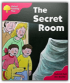
Roderick Hunt
"Oxford Reading Tree" remains the nation's favorite reading scheme and countless children have learnt to read with Biff, Chip, and Kipper. We are delighted to unveil its fresh new look for today's children, teachers and parents, with lively new covers and fresh artwork. Engaging new artwork and covers - Alex Brychta's unique style of artwork enthralls and entertains children, and the fresh new look will heighten their pleasure in reading the stories. With freshly drawn artwork for all the favorite core stories at Stages 2 - 5 and fantastic new covers, "Oxford Reading Tree" is more appealing than ever! Stories children love - The "Oxford Reading Tree" stories have always captivated children's imagination, inspiring them to read - and the stories and characters in the new editions haven't changed at all. Apart, that is, from an exciting new story at Stage 3, "The Egg Hunt", which replaces the "Dolphin Pool". Simplified structure - We have also simplified the structure of the scheme in response to feedback from you: "Owls" Storybooks become Stages 6 and 7 Storybooks; "Magpies" become Stages 8 and 9 Storybooks; "Wrens" at Stages 2 have become patterned stories at Stages 1+ and Stage 2; and "Wrens" at Stage 3 are now patterned stories at Stage 2. New teaching support material - In addition to the existing guided reading cards, perfect for use in guided reading sessions, we have brought out new teaching materials to reflect the needs of teachers in today's classroom: flexible, friendly teacher's notes included free with each pack of "Oxford Reading Tree" books - these are easy to store and will save you hours of preparation!; new Take-Home cards for every Storybook from Stages 1 - 9 to help parents or carers get the most out of reading with their child; free resources website with downloadable photocopy masters; and new "Teacher's Handbook" and special edition for Scotland.
Oxford Reading Tree: Stage 4: Storybooks: the Storm
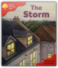
Roderick Hunt
"Oxford Reading Tree" remains the nation's favorite reading scheme and countless children have learnt to read with Biff, Chip, and Kipper. We are delighted to unveil its fresh new look for today's children, teachers and parents, with lively new covers and fresh artwork. Engaging new artwork and covers - Alex Brychta's unique style of artwork enthralls and entertains children, and the fresh new look will heighten their pleasure in reading the stories. With freshly drawn artwork for all the favorite core stories at Stages 2 - 5 and fantastic new covers, "Oxford Reading Tree" is more appealing than ever! Stories children love - The "Oxford Reading Tree" stories have always captivated children's imagination, inspiring them to read - and the stories and characters in the new editions haven't changed at all. Apart, that is, from an exciting new story at Stage 3, "The Egg Hunt", which replaces the "Dolphin Pool". Simplified structure - We have also simplified the structure of the scheme in response to feedback from you: "Owls" Storybooks become Stages 6 and 7 Storybooks; "Magpies" become Stages 8 and 9 Storybooks; "Wrens" at Stages 2 have become patterned stories at Stages 1+ and Stage 2; and "Wrens" at Stage 3 are now patterned stories at Stage 2. New teaching support material - In addition to the existing guided reading cards, perfect for use in guided reading sessions, we have brought out new teaching materials to reflect the needs of teachers in today's classroom: flexible, friendly teacher's notes included free with each pack of "Oxford Reading Tree" books - these are easy to store and will save you hours of preparation!; new Take-Home cards for every Storybook from Stages 1 - 9 to help parents or carers get the most out of reading with their child; free resources website with downloadable photocopy masters; and new "Teacher's Handbook" and special edition for Scotland.
A present for Santa

Pretty Star the Pony
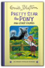
Enid Blyton
Puss in Boots

Reading 2000: "With a Little Help from Your Friends", "Nothing to be Scared of", "Happy Returns" and "Freedom Calls" Level 1, Partners

Rupert and the Sleepy Imp
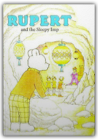
Scholastic Q & A: How Do Bats See In The Dark?
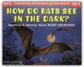
Melvin Berger, Gilda Berger
From simple questions like "What do bats eat?" to more complex ones like "Why do fireflies glow?", this book delivers the answers kids want in a conversational format that's easy to understand.Q: How do bats see in the dark? A: With their ears! In this wonderful introduction to nocturnal animals, kids will learn hundreds of facts about creatures of the night. Readers will find out that each kind of firefly has its own special signal, that cockroaches have been on Earth since the time of the dinosaurs, and that a litter of fourteen baby opossums will fit easily in a soup spoon! School Tables

Sleeping Beauty
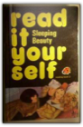
Alison Ainsworth
Snowy
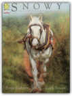
Berlie Doherty
Rachel lives on a barge. When her teacher asks the class to bring pets to school, Rachel's parents forbid her to take Snowy, because he's a working horse, but then a school outing to the barge is arranged, so everyone can meet him. Berlie Doherty has twice won the Carnegie Medal.
Surrounded by the Cross Fire

Test Your Child Hb
The Thief
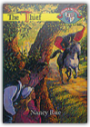
Nancy Rue
Thomas's life becomes complicated when a strong, 15-year-old Scottish servant named Malcolm comes to live with the Hutchinsons. Not only is he the first boy to ever beat Thomas in a brawl, but Caroline seems to like him, as well! Meanwhile, the heated anger between the Loyalists and the Patriots about to boil over. When the horses of the Patriots begin to disappear, it seems pretty obvious who's behind the thievery. Or is it? While on a picnic, Malcolm, Caroline, and Thomas encounter the masked rider in the woods, and it may cost Malcolm his life! Can Thomas save Malcolm before he bleeds to death? Who is the man behind the mysterious mask? Are some things just plain wrong no matter whose side you're on?The Christian Heritage Series is an ongoing line of youth books that explore the role of faith and family throughout American history. These engaging stories help young readers better understand their country, its values, and its God. The Williamsburg Years books take place in early 1780s Virginia. Nancy Rue's writings have appeared in a variety of youth publications, including Clubhouse, Campus Life, and Teens Today. She has won a number of literary honors, including the 1991 C.S. Lewis Honor Book Award. THINGS THAT ARE MOST IN THE WORLD

Thomas 14 Little Old Engine
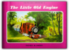
Rev W Awdry
Sir Handel's thoughtlessness causes Peter Sam to have an accident, Skarloey returns and he and Rusty each rescue Duncan after he makes foolish mistakes, then a television crew comes to film them all.
The Wedding

When God Made Adam and Eve
Winnie the Pooh and the Blustery Day
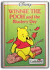
Walt Disney
ECB-06
|

My Library
Collection Total:
199 Items
199 Items
Last Updated:
Sep 29, 2012
Sep 29, 2012